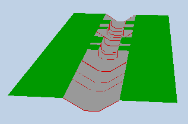

Visualisation 3D de la géométrie d'un canal modélisé dans SIC²
Pour visualiser une géométrie en 3 dimensions, générer un fichier contenant les coordonnées des profils des sections à l'aide de l'outil d'export des profils de section au format x,y,z.
Importer ce fichier à l'aide du bouton ci-contre :
Facteur de réduction de la longueur du canal :
Pour naviguer dans la vue 3D :
- Utiliser le pointeur de souris pour diriger le regard
- Clic-gauche ou flèche haut pour avancer
- Clic-droit ou flèche bas pour reculer
- Flèche gauche pour se décaler sur la gauche
- Flèche droite pour se décaler sur la droite
- Touche R pour monter
- Touche F pour descendre
